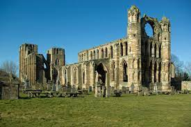
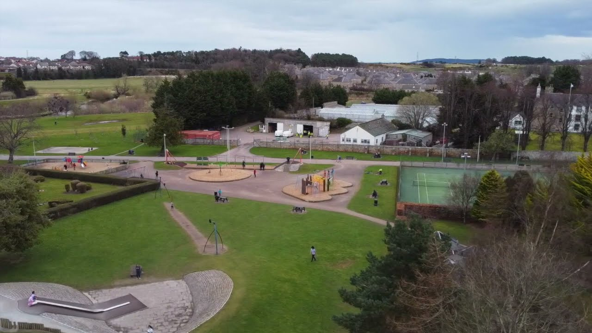

Elgin Cathredal, built in 1224, can be toured for £26 per adult. You can climb the towers, and the surrounding site for free
Cooper Park is the main park in Elgin, where you can enjoy walks, or play sports including tennis and cricket. There is also a lot of parking available.
Elgin High Street contains many shops, cafes, and the St Giles Shopping Centre, for any shopping needs.